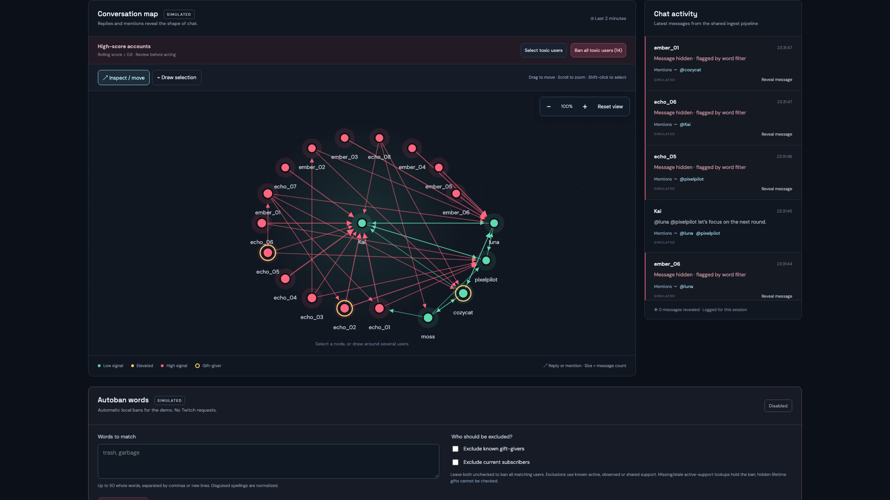
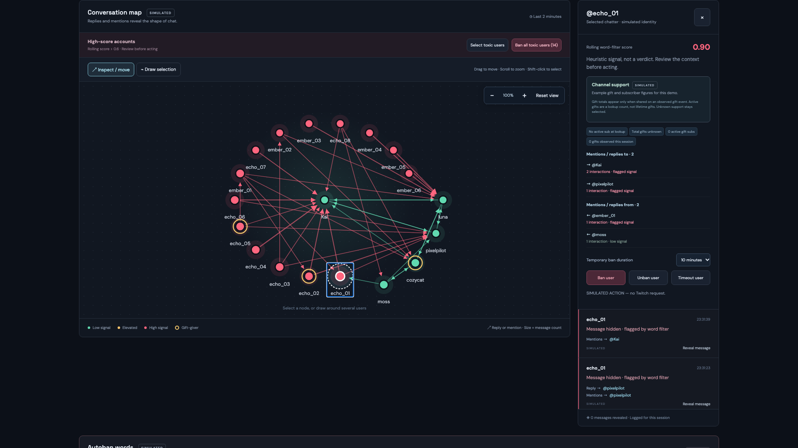
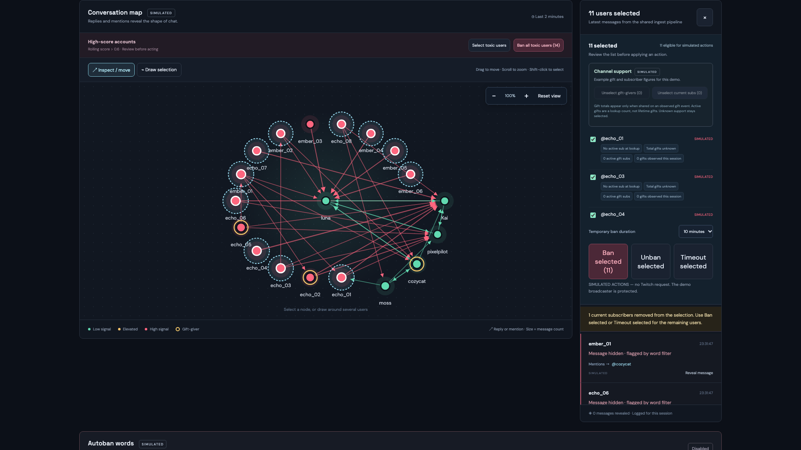
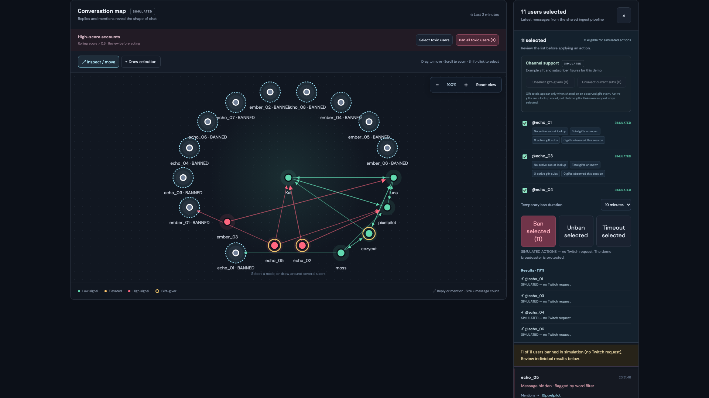
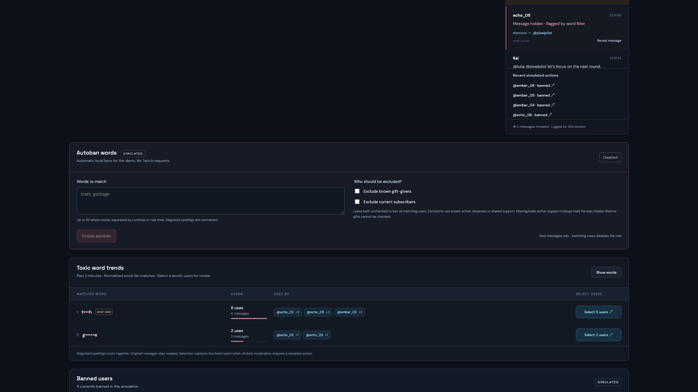

Twitch moderation · In context
ModMap
A network view for Twitch chat. Explore how replies and mentions connect chatters, review simulated moderation actions, and configure word rules.

See the conversation networkReplies and mentions connect the users involved in a simulated raid.
Inspect a chatterReview messages and connections before acting.
Review before moderationSubscription and gift context helps refine selections.
See action resultsLocal actions show individual outcomes without Twitch requests.
Configure word rulesAutoban settings are explicit and opt-in.